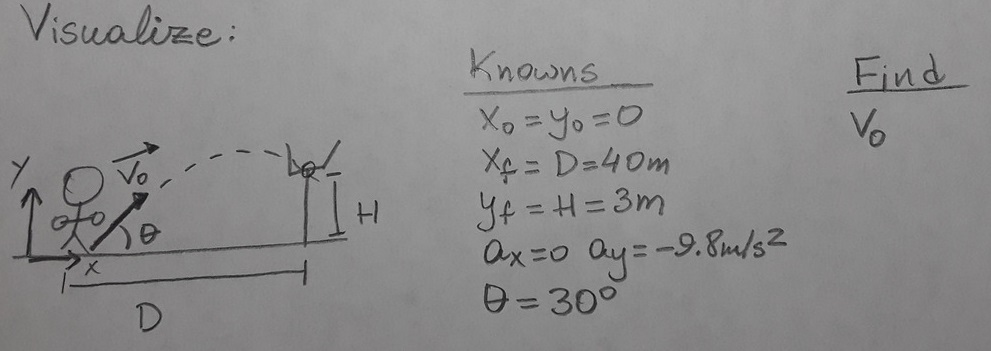

Vectors and 2D Kinematics
Here's a question
Press c to draw on slides. Press c again to toggle off drawing.
Press b to open a whiteboard. Press b again to go back to slides.
Left-click to draw, right-click for eraser
Press DEL to clear drawings from current slide.
Press BACKSPACE to clear drawings from all slides.
Press x and y to cycle between colors: black, red, blue, and green
Down arrows lead to blank slides for easy sketching
Take screenshots for notes and to share with your group!
Problem 1: A field goal kicker, like the one in discussed in the lecture, is 40m away from the goalposts. She kicks the ball at an angle of 30º with respect to the ground. If the goalposts are 3m high, what is the minimum speed with which she must kick the ball in order to score the goal?
Model: Answer the following questions: What are the essential characteristics of this situation? What simplifying assumptions do you need to make? What physics concepts might be relevant to help you solve this problem? What led you to conclude that these concepts are relevant here?
Problem 1: A field goal kicker, like the one in discussed in the lecture, is 40m away from the goalposts. She kicks the ball at an angle of 30º with respect to the ground. If the goalposts are 3m high, what is the minimum speed with which she must kick the ball in order to score the goal?
Visualize: What are your knowns and unknowns? Add both the variable name and its value (if you know it) to the diagram below. Is there any new information you can deduce from your picture? Also, be sure to write down what quantity you're trying to find. It may be helpful to also draw your diagram on paper and/or take a screenshot for future reference. Just be sure to share ideas and progress with your group. You can use the down arrow to move to a blank slide, and the up arrow to come back to the problem statement
Problem 1: Visualize Checkpoint: Does your diagram look similar to the one shown here? If it looks substantially different, be sure to discuss what those differences are and if they're important. In particular, are you perhaps making an assumption that isn't necessarily true?
Problem 1: A field goal kicker, like the one in discussed in the lecture, is 40m away from the goalposts. She kicks the ball at an angle of 30º with respect to the ground. If the goalposts are 3m high, what is the minimum speed with which she kick the ball in order to score the goal?
Begin to Solve: Since this is projectile motion, we know all the relevant kinematic equations. Write them all down, and begin to make a plan. Have a discussion on which equations might be useful, and how to use them simultaneously. If you get stuck here, move to the next question. You can use the down arrow to move to a blank slide with more room to write.
Problem 1: For this problem, we are not given any of the initial velocity components, so we can't solve for the time flight directly (i.e, find a number). Since we are given information about the ball's x-displacement, we can relate the x-displacement to the y-displacement by eliminating the time using the $x(t)$ equation. If you're stuck, ask for help!
Use the up/down arrows to move to a blank slide to draw/write the equations you are now planning to use.
Problem 1: A field goal kicker, like the one in discussed in the lecture, is 40m away from the goalposts. She kicks the ball at an angle of 30º with respect to the ground. If the goalposts are 3m high, what is the minimum speed with which she kick the ball in order to score the goal?
Solve: Now that you've made a plan and identified the relevant equation $(y(x=40m)\geq 3\text{m})$, finish solving the problem. In particular, manipulate the equations to obtain an expression of the type $v_0\geq$ (something), and explain why this means there is a minimum speed with which you must kick the ball. You can do your work on this page, on a Zoom whiteboard, on your own paper, or wherever else you find convenient. Just be sure to share ideas and progress with your group. As always, ask for help if you're stuck!
Problem 2: Visualize Checkpoint Does your diagram look similar to the one shown here? If it looks substantially different, be sure to discuss what those differences are and if they're important. If you're confused, ask for help.
Problem 2: The WashU racecar team lets you take one of their karts out for a drive on a circular track with a radius of 145 m. At top speed, you can finish a lap in 1 minute. At time $t = 0$, you are driving by the start line of the track, which coincides with the x axis.
Find the x and y components of the velocity and acceleration vectors at time $t=10$s.